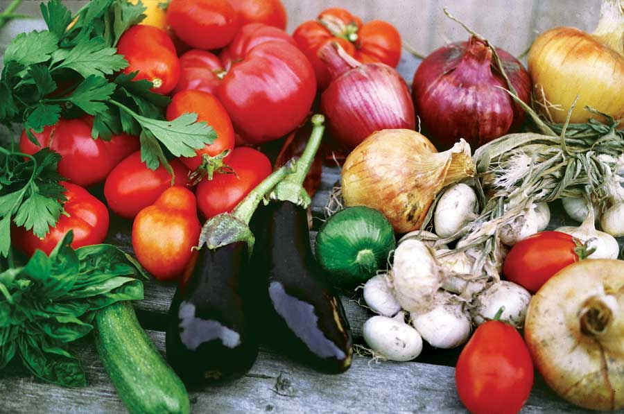

In Italy, it’s a tradition to plant small kitchen gardens near homes to produce the classic vegetables found in the picture above, such as the dark, glossy ‘Violetta Lunga’ eggplant. ‘Genovese’ basil is prized for its spicy flavor and wonderful aroma, the fluted ‘Costoluto Genovese’ tomato is traditionally used for tomato purée, and the small, white ‘Cippolina Borretana’ onion is ideal for pickling and making kabobs and creamed onions.
BRAISED EGGPLANT STUFFED WITH GARLIC
Ingredients:
8 to 10 long, skinny eggplants, such as Farmer’s Long
2 plump garlic cloves, thinly sliced
2 tbsp olive oil
Sea salt and freshly ground pepper
Chopped flat-leaf parsley
Vinegar for serving
Instructions:
Cut several slits in each eggplant and insert a sliver of garlic into each. Heat the olive oil in a wide skillet and add the eggplant. Cook until the eggplant starts to sizzle and color a bit, about 5 minutes. Add 1 cup of water and 1/2 teaspoon of salt. Bring to a boil. Then reduce the heat to medium-low, cover the pan, and cook until the eggplants are completely tender, about 20 to 30 minutes. You may add more liquid as they cook. When tender, remove the lid and cook until the water has evaporated and the eggplants are golden, about 10 minutes. Arrange them on a platter, season with pepper, and shower with parsley. Serve with vinegar if you like a bit of sharpness.
|
 ROSALIND CREASY To enjoy authentic Italian produce, you must find true Italian seed. Look for traditional heirloom Italian varieties from American seed companies such as Seeds from Italy and The Cook’s Garden. |
|
|